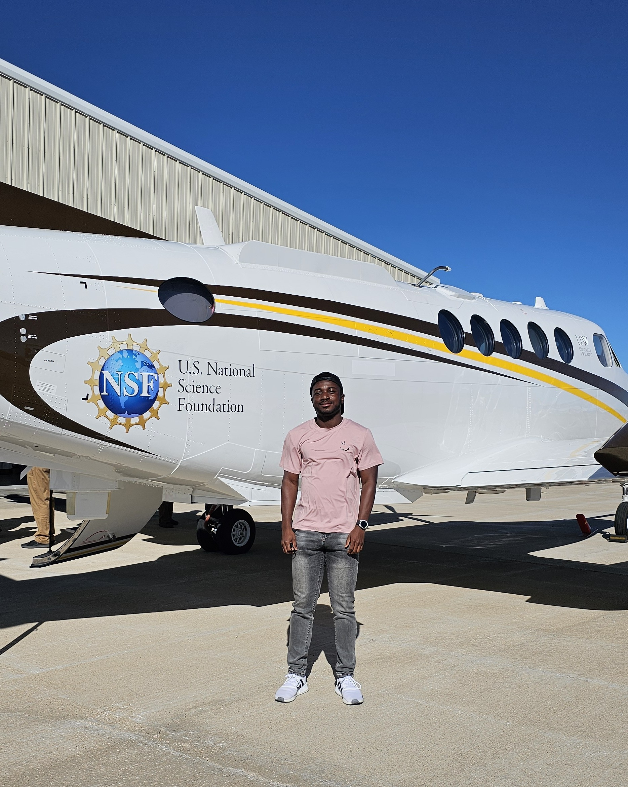

About Me

I am a Ph.D. candidate and Graduate Teaching Assistant in Atmospheric Science at the University of Wyoming. My work focuses on orographic precipitation and cold-season convection, using convection-permitting modeling (WRF/MPAS), observational analysis, and satellite-informed evaluation (GPM, CloudSat). I collaborate with scientists at NCAR and run high-resolution experiments on CISL supercomputers to study storm organization, precipitation efficiency, and flood risk in complex terrain.
You can also find me on
Contact
Email: fafrifa@uwyo.edu · Alternate: francisafrifa0@gmail.com
GitHub: github.com/OT-Afrifa
Location: Laramie, WY, USA